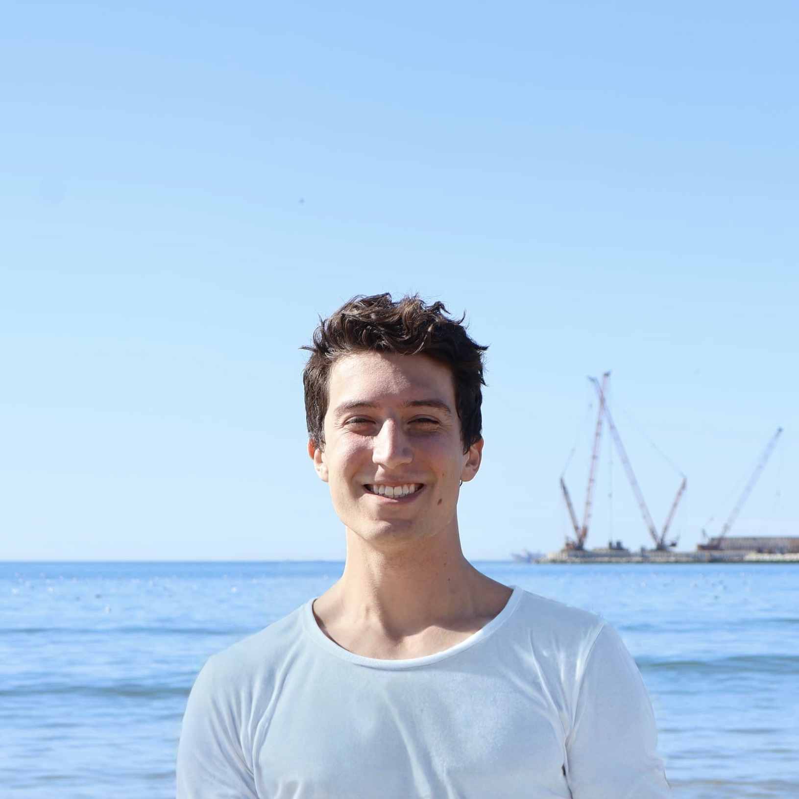
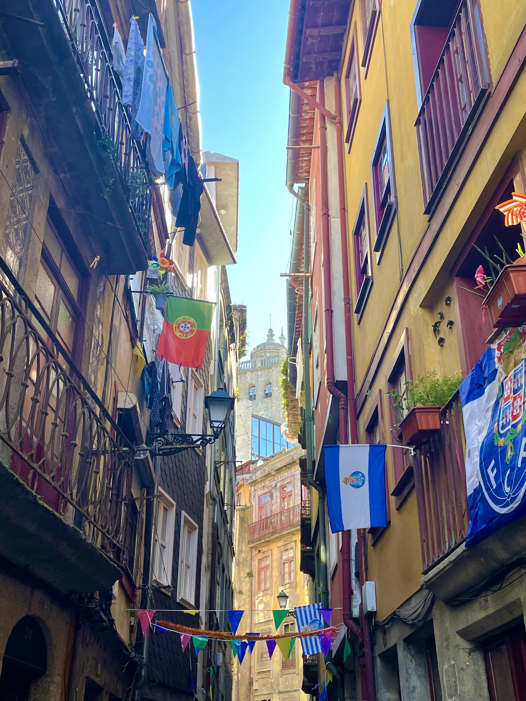

Biography
On what felt like the first weekend of the year with tolerable weather in Laramie, Wyoming, I received my Bachelor of Science in Finance from the University of Wyoming. Initially an honors engineering student, I transferred to accounting after a year, then switching to what would become my terminal major junior year. As the COVID-19 restrictions wore off junior and senior year, I involved myself more in Financial Management Organization, Blockchain Club, and the Chinese program, which I had taken every language class for.
During the breaks in my college years, I worked as a Warehouse Generalist at Diagnostic Support Services, a biomedical supplies shipping and manufacturing startup in the suburbs of Chicago. I joined the company in its infancy as the very first employee in the warehouse, though we initially did all the work in a small office next to the CEO’s. That arrangement was short-lived, as the company was growing rapidly, and production volume growing with it. Almost every day that first summer was dynamic; I created new SOPs, assisted in IT setup, and recruited and trained my high school buddies to help the cause. Every summer and winter when I came back, the warehouse had grown, but our impact always lingered. By the time I left, the company and staff had grown multiple times over. I keep in touch with senior management to this day.
Before graduation, I was extended an offer to join the University of Wyoming Foundation as one of two investment analyst interns, which I eagerly accepted. On the team I would join the CIO, portfolio manager, and analysts in the task of managing our school’s endowment fund. I would conduct due diligence across various asset classes, create complex financial models, and sit in on meetings with funds and the university’s own stakeholders. The highlight of the summer was presenting and proposing a 7-figure specialty finance investment to the board of trustees, which was met with unanimous support.
After the internship ended, I was hired at Northern Trust onto the Alternative Asset Client Audit team, where I joined a team of profoundly talented individuals to create and deliver custody and performance reporting for our many clients. Here I continue to learn the machinations of private equity, real estate, and hedge fund assets, and hope to maintain my momentum within the alternatives space.


[Placeholder photo — swap for one of your own.]